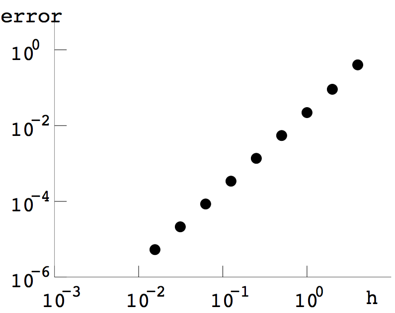
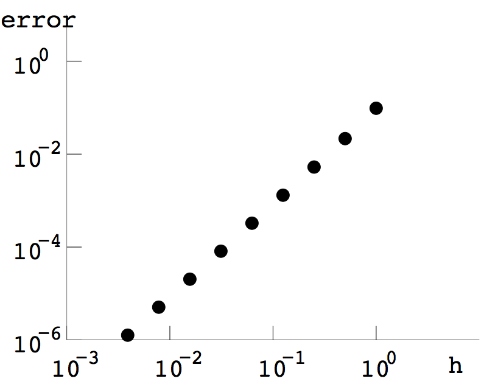
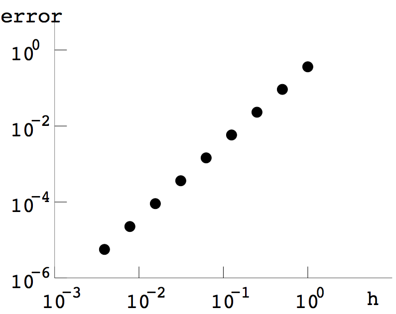
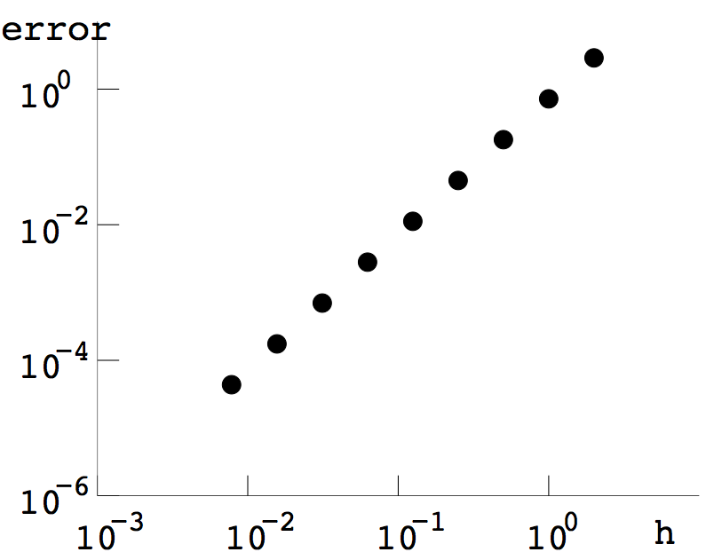

COMPUTER PROBLEMS 5.2
\(\def\ds{\displaystyle} \)
1 Compute the Composite Trapezoid Rule sum
\[\frac{h}{2}\left(y_0+y_m+2\sum_{i=1}^{m-1}y_i\right)\]
for \(m=16\) and \(m=32\), where \(h=(b-a)/m\). The results are
shown in the table.
\[\begin{array}{crcccc}
&\text{exact}&m=16&\text{error}&m=32&\text{error}\\ \\
\text{(a)}&2.000000&1.998638&0.001362&1.999660&0.000340\\
\text{(b)}&(1-\ln 2)/2 \approx 0.153426&0.153752&0.000326&0.153508&0.000082\\
\text{(c)}&1.000000&1.001444&0.001444&1.000361&0.000361\\
\text{(d)}&9\ln 3-26/9\approx6.998622&7.009809&0.011187&7.001419&0.002797\\
\text{(e)}&\pi^2-4\approx5.869604&5.837900&0.031704&5.861678&0.007926\\
\text{(f)}&2\sqrt{5}-\sqrt{15}/2\approx2.535644&2.535672&0.000028&2.535651&0.000007\\
\text{(g)}&\ln(\sqrt{3}+2)\approx1.316958&1.316746&0.000212&1.316905&0.000053\\
\text{(h)}&\ln(\sqrt{2}+1)/2\approx0.440687&0.440361&0.000326&0.440605&0.000082\\
\end{array}\]
3 Compute the Composite Trapezoid Rule for \(m=16\) and \(m=32\), as in
Computer Problem 1.
\[\begin{array}{crr}
&m=16&m=32\\ \\
\text{(a)}&1.464420&1.463094\\
\text{(b)}&0.891197&0.893925\\
\text{(c)}&3.977463&3.977463\\
\text{(d)}&0.264269&0.264025\\
\text{(e)}&0.160686&0.160936\\
\text{(f)}&-0.278013&-0.356790\\
\text{(g)}&0.785276&0.783951\\
\text{(h)}&0.369964&0.371168\\
\end{array}\]
5 Compute the Composite Midpoint Rule
\(\ds h\sum_{i=1}^{m}f(w_i)\)
for \(m=10, 100\) and \(1000\).
\[\begin{array}{ccccccc}
&m=10&\text{error}&m=100&\text{error}&m=1000&\text{error}\\ \\
\text{(a)}&1.8089&0.1911&1.9395&0.0605&1.9809&0.0191\\
\text{(b)}&1.4456&0.0544&1.4883&0.0117&1.4975&0.0025\\
\text{(c)}&2.5582&0.2702&2.7429&0.0855&2.8014&0.0271
\end{array}\]
7 Compute the Composite Midpoint Rule
for \(m=16\) and \(m=32\). Results are
shown below.
\[\begin{array}{ccc}
\text{(a)}&1.83152993&1.83183081\\
\text{(b)}&2.99986658&3.00116293\\
\text{(c)}&0.91601205&0.91597721\\
\end{array}\]
9 We compute the Composite Trapezoid Rule approximations and find the
difference from the correct integrals, given in Computer Problem 1(a)-(d), respectively.
Plots of \(h\) versus the error are below. The log-log plots show
an approximate slope of \(2\), confirming the fact that error \(\propto h^2\).



